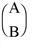

The LA_LEAST_SQUARE_EQUALITY function is used to solve the linear least-squares problem:
Minimize x ||Ax - c|| 2 with constraint Bx = d
where A is an n -column by m -row array, B is an n -column by p -row array, c is an m -element input vector, and d is an p -element input vector with p ≤ n ≤ m+p . If B has
full row rank p and the array  has full column rank n , then a unique solution exists.
LA_ LEAST_SQUARE_EQUALITY is based on the following LAPACK routines:
|
Output Type |
LAPACK Routine |
|
Float |
sgglse |
|
Double |
dgglse |
|
Complex |
cgglse |
|
Double complex |
zgglse |
For details see Anderson et al., LAPACK Users' Guide , 3rd ed., SIAM, 1999.
Result = LA_LEAST_SQUARE_EQUALITY( A , B , C , D [, / DOUBLE ] [, RESIDUAL = variable ] )
The result ( x ) is an n -element vector.
The n -by- m array used in the least-squares minimization.
The n -by- p array used in the equality constraint.
An m -element input vector containing the right-hand side of the least-squares system.
A p -element input vector containing the right-hand side of the equality constraint.
Set this keyword to use double-precision for computations and to return a double-precision (real or complex) result. Set DOUBLE = 0 to use single-precision for computations and to return a single-precision (real or complex) result. The default is /DOUBLE if A is double precision, otherwise the default is DOUBLE = 0.
Set this keyword to a named variable in which to return a scalar giving the residual sum-of-squares for Result. If n = m + p then RESIDUAL will be zero.
Given the following system of equations:
2 t + 5 u + 3 v + 4 w = 9
7 t + u + 3 v + 5 w = 1
4 t + 3 u + 6 v + 2 w = 2
with constraints,
-3 t + u + 2 v + 4 w = -4
2 t + 5 u + 9 v + 1 w = 4
find the solution using the following code:
; Define the coefficient array:
a = [[2, 5, 3, 4], $
[7, 1, 3, 5], $
[4, 3, 6, 2]]
; Define the constraint array:
b = [[-3, 1, 2, 4], $
[2, 5, 9, 1]]
; Define the right-hand side vector c:
c = [9, 1, 2]
; Define the constraint right-hand side d:
d = [-4, 4]
; Find and print the minimum norm solution of a:
x = LA_LEAST_SQUARE_EQUALITY(a, b, c, d)
PRINT, 'LA_LEAST_SQUARE_EQUALITY solution:'
PRINT, x
IDL prints:
LA_LEAST_SQUARE_EQUALITY solution:
0.651349 2.72695 -1.14638 -0.620036
|
5.6 |
Introduced |